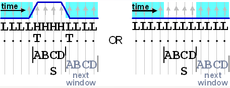
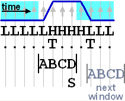
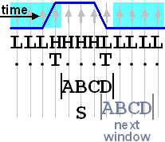
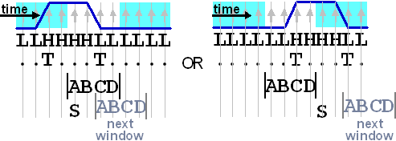
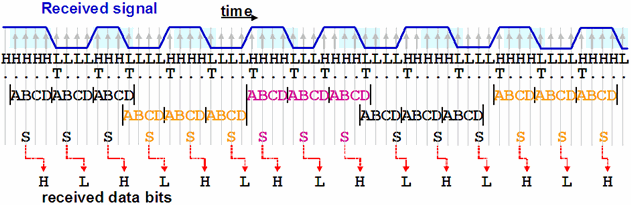

Drift and transition tracking
Transition tracking serves to detect data transitions in the presence of drift. To achieve this, a sample is taken at every 1/4 UI, and an observation window moved along these over-sampled data. The length of the observation window is one UI, that is, it always contains 4 samples, which will be referred to by ABCD. One sample will be selected as the received value of the current bit and passed on to the pattern matching block for comparison with the expected value.
Now if some kind of drift is present, then transitions will occur within such an observation window; such transitions will be called internal transitions. If such a transition is found, and the drift is to be taken into account, then the next window cannot simply be placed immediately after the current window, but must be adjusted depending on where the transition occurs; and the decision which sample to select as the received value for the current bit will have to depend on this as well. Altogether, there are 4 cases to consider.
No transition within the window
If no transition occurs within the current window, then a transition coincides with the start of the window, or there is no transition; this will always happen if no drift is present. In this case sample C will be selected, and the observation window for the next bit will be moved by exactly 1 UI to the right:

Transition between sample A and B
If a transition occurs between sample A and B (called "AB transition"), the tracker deduces that the previous bit has been sampled at least 4 times, and that one of these samples has already been selected in the previous window. In this case, sample D (the value after the transition) will be selected in the current window. The observation window for the next bit will be moved by 1 1/4 UI to the right. This is because the tracker assumes that the bit after the transition has very nearly a length of one UI, so that the first sample after the current window still belongs to the bit starting at B in the current window:

Transition between sample C and D
If a transition occurs between sample C and D (called "CD transition"), the tracker deduces that the bit before the transition has been sampled at most 4 times, and that no sample has yet been selected from it. In this case, sample B will be selected. The observation window for the next bit will only be moved by 3/4 UI to the right, so that the first sample of the next window coincides with the last sample of the current window:

Transition between sample B and C
If the transition occurs between sample B and C (called "BC transition" or "jump by 2"), the tracker cannot determine by looking at the current observation window whether the reason for this transition is that the previous bit was too short or too long. In such a case the window will be moved forward alternately by either (a) 1/2 UI, responding to the first possibility, or (b) 3/2 UI, responding to the second possibility. In case (a), sample A of the current window will be selected, in case (b) the first sample after the current window:

In case (a) two samples of the same bit may be selected, in case (b) a bit may be completely missed. This introduces an indeterminacy which will in many cases be fatal for the test. In these cases, the transition tracker will issue the ErrJMP2 error message (unless adjustment is suppressed, see Controlling the tracking behavior).
Implementation parameters
In the current implementation, only every 4th observation window can be adjusted. Thus one observation window actually consists of three sub-windows, each of which has a size of one UI (= four samples). A transition within such a 3 UI observation window is called internal if it is internal in one of its sub-windows. The adjustment of the next 3 UI window is determined by the last internal transition (if any) of the previous 3 UI window. Under this restriction the transition tracker can be relied on to select exactly one sample for every data bit only if the following conditions are satisfied:
- Every bit is sampled at least 3 times, and at most 5 times.
There are cases in which the DUT satisfies this condition, but the signal is distorted in the transmission line. This can be corrected by pulse stretching, see Stretching the pulse.
- Two of any three consecutive bits are sampled exactly 4 times.
This excludes cases like
HHHHH LLLL HHH LLLL LLL HHHH HHHHABCDA BCDA BCDABC DAB CDAB CD,where the 2nd sub-window of the second window would have a BC transition. It also implies that shifts in opposite directions do not cancel each other out within a block of 3 bits. For example, HHHHLLLHHHHH is not allowed.
- If the number of samples between two transitions is n, n/4 must not have a remainder of 2.
Two further, more global, restrictions are:
- 24 consecutive bits must not be longer than 25 UI, and not shorter than 23 UI.
- Up to ±7 3/4 UI can be tracked within the whole pattern.
Handling BC transitions
A BC transition does not automatically cause an ErrJMP2 error message. In many situations, the tracker can recover the data bits correctly even in such a case, provided that the above implementation parameters are satisfied. Two examples are:
- The very first transition is a BC transition. Here the resulting indeterminacy can be defused by initial synchronization (for an example, see Positioning the first observation window and jump by 2). The same behavior applies to a first BC transition after a bi-directional pin has changed from drive to receive mode (see Tracking bi-directional pins).
- The last internal transition of a 3 UI observation window is a BC transition, but this window also contains an AB or CD transition. In such a case, the tracker can recover the data bits correctly.
Example

This example picks up the example of Overview of the protocol engine per pin. Five observation windows are shown. There are last CD transitions in the first and third window. The fourth window has its last internal transition between A and B in the third sub-window.
Functional changes
- Introduced in SmarTest 7.0.1